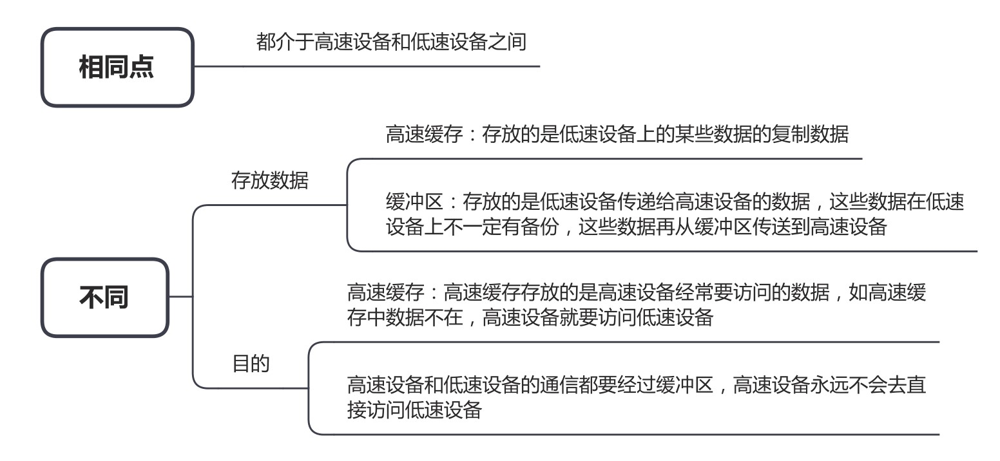

王道 408 操作系统笔记
# 操作系统概述
# 概念、功能、目标
概念
- 作为系统资源的管理者（基本功能）
- 作为用户和计算机硬件之间的接口（用户接口）
- 命令接口
- 联机命令接口，又称交互式命令接口
- 脱机命令接口，又称批处理命令接口
- 程序接口：由系统调用组成
- 图形用户接口：GUI，图形用户界面
- 首选 系统调用 和 图形用户界面
- 命令接口
- 实现对计算机资源的扩充
- 覆盖了软件的机器称为扩充机器或虚拟机
目标（方便用户使用）
- 方便性
- 有效性
- 可扩充性
- 开放性
# 特征
四大特征：并发、共享、虚拟、异步 （并发和共享是最基本的特征）
并发和并行
- 并发：多个事件交替发生，并发 = 串行 = 同步 = 单线程
- 并行：多个事件同时发生，并行 = 异步 = 多线程
共享
- 互斥共享方式：一个时间段内只允许一个进程访问该资源
- 同时共享方式：允许一个时间段内由多个进程 “同时” 对它们进行访问
虚拟
- 把一个物理上的实体变为若干个逻辑上的对应物
- 时分复用技术，例如虚拟处理器
- 空分复用技术，例如虚拟存储器
异步
- 又称多道程序设计。在多道程序环境下，允许多个程序并发执行，但由于资源有限，进程的执行不是一贯到底的，而是走走停停的，以不可预知的速度向前推进。
- 只有系统拥有并发性，才有可能导致异步性。
# 发展、分类
- 手工操作阶段
- 纸带机：用户独占全机、人机速度矛盾
- 批处理阶段（多任务集中处理）
- 单道批处理系统
- 外围机 —— 磁带
- 多道批处理系统
- 提高：系统资源利用率、I/O 设备利用率、吞吐量（首选吞吐量）
- 增加系统开销
- 作业的结构：程序 数据 作业说明书
- 硬件支持：中断、通道
- 操作系统开始出现、中断、并发
- 单道批处理系统
- 分时操作系统
- 轮流处理作业
- 不能处理紧急任务
- 多用户、交互性
- 优先保证响应时间（交互性）
- 主要解决交互性问题
- 最关键的问题是：能在一短的时间内，使所有用户程序都能运行
- 分时操作系统的响应与系统时钟的频率无关
- 操作系统正式形成
- 实时操作系统
- 短时间内做出正确的响应
- 优先处理紧急任务
- 硬实时系统：必须在严格的时间内完成处理
- 软实时系统：可以偶尔犯错
- 网络操作系统
- 数据通信
- 分布式操作系统
- 由多个计算机组成的一个系统，这些计算机之间可以通信来交换信息，互相之间无主次之分，它们共享系统资源，程序由系统中的全部或部分计算机协同执行
- 个人计算机操作系统
# 运行机制、体系结构
运行机制
- 两种指令
- 特权指令，例如：写时钟、I/O、中断处理、关中断、内存清零、停机、各种调度
- 非特权指令，例如：读时钟、取数、寄存器清零
- 两种处理器状态
- 核心态（root），又称管态、内核态，CPU 在核心态中可以执行除了陷入指令以外的全部指令
- 用户态，又称目态。在用户态发生 不等于 在用户态执行
- 两种程序
- 内核程序（运行在核心态）
- 应用程序
操作系统内核
- 内核是计算机上配置的底层软件
- 时钟管理（实现计时功能）
- 中断机制（在中断机制中，只有一小部分功能属于内核）
- 原语（程序运行具有原子性，不可中断）
- 支撑功能
- 对系统资源进行管理的功能
- 进程管理
- 存储器管理
- 设备管理
# 中断、异常
中断机制
- 中断机制是操作系统必须提供的功能，由操作系统介入，开展管理工作
- 用户态 —> 核心态 的唯一途径是中断，状态转换由硬件（硬件中的中断隐指令）完成
- CPU 一旦响应中断，则会关闭中断屏蔽，以防止其他低级或同级中断的干扰，但更高级别的中断依然可能打断当前的任务
- 中断向量：提供中断服务程序的入口地址或中断服务程序的首地址
- 发生中断时
- 操作系统：提供中断服务、初始化中断向量表、保存中断屏蔽字（关闭中断屏蔽）、保存通用寄存器、保存栈指针（SP）、保存任务控制块（TCB）
- 中断隐指令：保存断点、保存当前程序计数器（PC）、保存当前处理器状态字（PSW）、关中断、触发中断服务程序、状态转换（用户态 —> 核心态）
- 硬件机构：保存返回地址、保存中断向量地址、保存快表（TLB）、保存 Cache
- 中断结束后：恢复断点信息，继续执行被中断的指令
中断的分类
- 内中断（异常），信号来源于 CPU 内部
- 在用户态执行（在用户态发生），随后进入内核态
- 软件中断
- 陷入（trap），在用户态下使用特权指令会引发陷入中断
- 故障（fault），例如：缺页中断
- 硬件中断
- 中止（abort）
- 外中断，信号来源于 CPU 外部
- 例如：I/O 中断、时钟中断（发生时钟中断后，由时钟中断服务程序更新所有与时间相关的内容）
- 可屏蔽中断 INTR
- 不可屏蔽中断 NMI
# 系统调用
概念：应用程序通过系统调用请求操作系统的服务。保证系统的稳定性和安全性。
系统调用的过程
- 传递系统调用参数
- 执行 trap 指令
- 执行响应的服务程序
- 返回用户态
系统调用和库函数的区别
- 系统调用是操作系统向上层提供的接口
- 有的库函数是对系统调用的进一步封装
- 当今编写的应用程序大多是通过高级语言提供的库函数间接地进行系统调用
# 操作系统结构
- 分层法
- 模块化
- 宏内核：又称大内核，将操作系统的主要功能模块都作为系统内核，运行在核心态。不利于扩展
- 微内核：只把最基本的功能保留在内核。频繁的状态切换会导致性能问题
- 外核：为虚拟机分配资源，使每个虚拟机都认为它拥有完整的资源，能保持多个虚拟机不发生冲突
# 操作系统引导
- BIOS 是固化在主板 ROM 芯片上的程序，包含系统设置程序、基本输入输出程序、开机自检程序、系统启动自举程序等
- 引导程序储存在装有操作系统的硬盘的引导分区中
操作系统引导过程
- 激活 CPU
- 硬件自检
- 加载带有操作系统的硬盘
- 加载主引导记录（MBR）
- 扫描硬盘分区表，加载硬盘活动分区
- 加载分区引导记录（PBR）
- 加载启动管理器
- 加载操作系统
# 虚拟机
- 第一类虚拟机管理程序：最高特权的程序，向上层提供多个虚拟机，不同的虚拟机可以运行不同的操作系统
- 第二类虚拟机管理程序：在主操作系统中运行第二类虚拟机管理程序，由它控制另一个操作系统。本质是在主操作系统中运行的一个进程。例如：VMware
# 进程与线程
# 进程的定义、组成、组织方式、特征
不同的角度有不同的定义
- 进程是一个正在执行程序的实例
- 进程是一个程序及其数据从磁盘加载到内存后，在 CPU 上的执行过程
- 进程是一个具有独立功能的程序在一个数据集合上运行的过程
- 进程 = PCB + 程序 + 数据
组成：PCB（进程控制块，进程存在的唯一标志）、程序段、数据段
组织方式：链接方式（指针指向不同的队列）、索引方式（索引表）
特征：动态性、并发性、独立性、异步性、结构性
进程是从操作系统出发的，由系统生成，是操作系统资源分配的基本单位
# 进程的状态与转换
状态：
- 运行状态：占有 CPU，并在 CPU 上运行，单核只能一个进程（双核两个）（CPU ✔，其它资源 ✔）
- 就绪状态：已经具备运行条件，但是没有空闲的 CPU，暂时不能运行（CPU ✘，其它资源 ✔）
- 阻塞状态：为了等待某个事件的发生，暂时不能运行（CPU ✘，其它资源 ✘）
- 创建状态：创建 PCB，程序段，数据段
- 终止状态：回收内存，程序段，数据段，撤销 PCB
进程状态间的转换（只能这样转化）
- 创建态 -> 就绪态
- 就绪态 -> 运行态
- 运行态 -> 就绪态
- 运行态 -> 中止态（比如数组越界）
- 运行态 -> 阻塞态（主动）
- 阻塞态 -> 就绪态（被动）
# 进程控制
进程控制：用 “原语” 实现各种进程状态转换
原语做的事情：
- 更新 PCB 中的信息
- 将 PCB 插入合适的队列
- 分配 / 回收资源
进程控制相关的原语
- 进程的创建
- 创建原语：申请空白 PCB、为新进程分配所需资源、初始化 PCB、将 PCB 插入就绪队列
- 引起进程创建的事件：用户登录、作业调度、提供服务、应用请求
- 进程的终止
- 撤销原语
- 引起进程中止的事件：正常结束、异常结束、外界干预
- 进程的阻塞
- 阻塞原语：运行态 -> 阻塞态
- 阻塞是主动行为，自我阻塞
- 引起进程阻塞的事件：需要等待系统分配某种资源、需要等待相互合作的其他进程完成工作
- 进程的唤醒：
- 唤醒原语：阻塞态 -> 就绪态
- 唤醒是被动行为，被唤醒
- 引起进程唤醒的事件：等待的事件发生
- 进程的切换
- 切换原语
- 引起进程切换的事件：当前进程事件片到、有更高优先级的进程到达、当前进程主动阻塞、当前进程终止
父进程与子进程
- 可以并发
- 共享部分资源，不共享虚拟地址空间，子进程在创建时会分配虚拟地址空间
- 每个进程都有自己的 PCB
# 进程通信
共享存储（分配共享空间，且互斥（P、V 操作））
- 基于数据结构的共享：固定分配（低级）
- 基于存储区的共享：划分存储区（高级）
- 操作系统只提供共享空间和相关的工具，数据交换由用户自己完成
消息传递
- 消息：消息头 消息体
- 直接通信方式：直接挂载消息到 PCB 的消息队列中
- 间接通信方式：间接利用信箱发送消息
管道通信（pipe）
- 管道实际上就是缓冲区
- 单个管道只能半双工通信
- 互斥（没写满，不能读，反之同理）
- 管道的大小固定
# 线程概念和多线程模型
线程是一个基本的 CPU 执行单元，也是程序执行流的最小单位。引入线程后，进一步提高了系统的并发度。
资源分配、调度发生变化：进程是资源分配的基本单位，线程是调度的基本单位
并发性：各线程间也能并发，提升了并发度
系统开销：可以只在进程中切换，减小了 CPU 切换环境的系统开销
线程有哪些重要的属性
- 线程是处理机调度的基本单位
- 多 CPU 计算机中，各个线程可占用不同的 CPU
- 每个线程都有一个线程 ID、线程控制块（TCB）
- 线程也有就绪、阻塞、运行三种基本状态
- 线程几乎不拥有系统资源
- 同一进程的不同线程间共享进程的资源
- 由于共享内存地址空间，同一进程中的线程间通信甚至无需系统干预
- 同一进程中的线程切换，不会引起进程切换
- 不同进程中的线程切换，会引起进程切换
- 切换同进程内的线程，系统开销很小
- 切换进程，系统开销较大
线程的实现方式
- 用户级线程（ULT）
- 由应用管理，从用户的视角看能看到的线程
- 各进程轮流执行时间片，进程内的各线程共用进程的时间片
- 用户级线程的调度以进程为单位，同一进程内的线程不能并行
- 用户级线程被阻塞，整个进程也会被阻塞
- 用户级线程的创建和调度不需要内核的支持。跨进程的线程调度需要内核的支持
- 内核级线程（KLT）
- 由操作系统管理，从操作系统内核视角看能看到的线程
- 内核级线程才是处理机分配的单位
- 同一进程的线程切换，需要由用户态转到内核态进行
- n 个 ULT 可以映射到 m 个 KLT 上（n>=m）
多线程模型（用户线程对内核线程）
- 多对一模型
- n 个 ULT 映射到 1 个 KLT
- 优点：开销小，效率高
- 缺点：容易阻塞，并发度不高
- 一对一模型
- n 个 ULT 映射到 n 个 KLT
- 优点：并发能力很强
- 缺点：占用成本高，开销大
- 多对多模型
- n 个 ULT 映射到 m 个 KLT 上（n>=m）
- 中和以上两种优缺点
# 处理机调度的概念、层次
作业：一个具体的任务（向系统提交作业 ≈ 让操作系统启动一个程序）。作业是从用户角度出发的，由用户提交，以用户为单位。
调度：通常进程数量大于处理机数量，所以要按照一定的算法选择一个进程，并将处理机分配给它运行，以实现进程的并发执行
三个层次
- 高级调度（作业调度）
- 辅助外存与内存之间的调度，作业调入时会建立相应的 PCB，作业调出时才撤销 PCB，调入可由操作系统决定，作业运行结束才调出
- 中级调度（内存调度）
- 将暂时不用的进程放到外存（PCB 不外放），提高内存利用率和系统吞吐量，进程状态为挂起状态，形成挂起队列
- 低级调度（进程调度）
- 最基本，用算法为进程分配处理机资源，几十 ms 一次
七状态模型（有两个版本）
王道版本：
汤小丹版本：
# 进程调度的时机、切换与过程、调度方式
进程调度的时机
- 什么时候需要进程调度
- 主动放弃（进程正常终止、运行过程中发生异常而终止、进程主动请求阻塞）
- 被动放弃（分给进程的时间片用完、有更紧急的事需要处理、有更高优先级的进程进入就绪队列）
- 什么时候不能进行进程调度
- 在处理中断的过程中
- 在操作系统内核程序临界区中
- 临界资源：一个时段段内各进程互斥地访问临界资源
- 临界区：访问临界资源的那段代码（一段程序）
- 内核程序临界区会访问就绪队列，导致其上锁
- 在原子操作过程中（原语）
2012 年 408 真题：进程处于临界区时不能进行处理机调度（✘）
- 原因：操作系统内核程序临界区中不能进行处理机调度。普通的临界区不会直接影响操作系统内核的管理工作，可以进行处理机调度。
进程的切换与过程
- “狭义的调度” 与 “进程切换” 的区别
- 狭义的进程调度：选择一个进程
- 广义的进程调度：选择一个进程 + 进程切换
- 进程切换的过程需要做什么
- 对原来运行进程各种数据的保存
- 对新的进程各种数据的恢复
调度方式
- 非剥夺调度方式（非抢占式）：只允许进程主动放弃处理机
- 剥夺调度方式（抢占式）：进程被动放弃，可以优先处理紧急任务，适合分时操作系统、实时操作系统
# 调度算法的评价指标
CPU 利用率 = CPU 忙碌的时间 / 总时间
系统吞吐量 = 总共完成了多少道作业 / 总共用了多少时间
周转时间
- 周转时间 = 提交作业 到 完成作业 所花费的时间
- 平均周转时间 = 各作业周转时间之和 / 作业数
- 带权周转时间 = 作业周转时间 / 作业实际运行的时间
- 平均带权周转时间 = 各作业带权周转时间 / 作业数
- 周转时间是批处理系统的评价指标（缩短周转时间以提升系统吞吐量）
等待时间（进程或作业等待处理机状态时间的和）
- 进程：等待被服务的时间之和
- 作业：建立后的等待时间 + 作业在外存后备队列中等待的时间
响应时间 = 用户提交请求 到 首次产生响应 所花费的时间
# FCFS、SJF、HRRN 调度算法（适合早期的批处理系统）
1、先来先服务（FCFS）
- 先到达先进行服务
- 作业 - 后备队列；进程 - 就绪队列
- 非抢占式
- 公平、算法简单
- 对长作业有利、对短作业不利、不会饥饿
2、短作业优先（SJF，shortest job first）
- 最短（服务时间最短）的作业优先得到服务，时间相同，先到达的先被服务
- 非抢占式（SJF）：选最短需要时间的作业先进入运行态
- 抢占式（SRTN）：有新作业进入就绪队列或有作业完成时，检查队列中需要时间最小的作业
- 在所有进程都几乎同时到达时，采用 SJP 调度算法的平均等待时间、平均周转时间最少。若没有这个前提，则抢占式的短作业 / 进程优先的平均时间最少
- 优点：“最短的” 平均等待时间、平均周转时间
- 缺点：对短作业有利，对长作业不利，可能产生饥饿现象
3、高响应比优先（HRRN）
- 响应比 = (等待时间 + 要求服务时间) / 要求服务时间
- 因此，等待时间是响应比的主要因素
- 要综合考虑作业 / 进程的等待时间和要求服务的时间
- 在每次调度时先计算各个作业 / 进程的响应比，选择响应比最高的作业 / 进程为其服务
- 进程主动放弃 CPU 时，需要该算法选取就绪队列的作业
- 非抢占式、不会饥饿
# 时间片轮转、优先级调度、多级反馈队列（适合交互式系统）
1、时间片轮转算法（RR）
- 算法思想：公平轮流地位各个进程服务，让每个进程在一定时间间隔内都可以得到响应
- 算法规则：按照各进程到达就绪队列的顺序，轮流让各个进程执行一个时间片（例如 100ms）。若进程未在一个时间片内执行完，则剥夺处理机，将进程重新放到就绪队列重新排队
- 只能用于进程调度、抢占式
- 优点：公平，响应快，适用于分时操作系统，不会饥饿
- 缺点：由于高频率的进程切换，因此有一定的开销；不区分任务的紧急程度
2、优先级调度算法
- 算法思想：根据任务的紧急程度来决定处理顺序
- 算法规则：每个进程 / 作业有各自的优先级，调度时选择优先级最高的作业 / 进程
- 适用：作业 / 进程 / IO
- 抢占式 / 不可抢占均有
- 静态优先级：不变
- 动态优先级：可以变
- 就绪队列可以有多个，可以按照不同的优先级组织
- 一般情况下的进程优先级：系统进程 > 用户进程，前台进程 > 后台进程，I/O 进程 > 计算进程
- 可以从追求公平（运行时间和等待时间）、提升资源利用率（IO 密集型进程优先）等角度考虑改变优先级
- 可能会饥饿
3、多级反馈队列调度算法
- 算法实现：设置多级就绪队列，各级队列优先级从高到低，时间片从小到大。新进程到达时先进入第一级队列，按照 FCFS 原则排队等待被分配时间片。若用完时间片进程还未结束，则进程进入下一级队列队尾。如果此时已经在最下级的队列，则重新放回最下级队列末尾。只有第 K 级队头的进程为空时，才会为 K+1 级对头的进程分配时间片，被抢占处理机的进程重新放回原队列队尾。
- 优点：对各个进程相对公平（FCFS 的优点），每个新到达的进程都可以很快就得到响应（RR 的优点）；短进程只用较少的时间就可以完成（SPF 的优点）；不必实现估计进程的运行时间（避免用户作假）；可灵活地调整对各类进程的偏好程度，比如 CPU 密集型进程、IO 密集型进程（可以将 IO 密集型进程放回原队列）
- 默认抢占式、会饥饿
下列进程调度算法中，可能引起进程长时间得不到运行的算法是？
A. 时间片轮转算法
B. 不可抢占式静态优先级算法
C. 可抢占式静态优先级算法
D. 不可抢占式动态优先级算法
答案：B
# 进程同步、进程互斥
1、进程同步
- 指为了完成某种任务而建立的两个或多个进程，这些进程因为需要在某些位置上协调他们的工作次序而产生的制约关系。进程间的直接制约关系就是源于它们之间的相互合作
- 总之：系统中各进程之间逻辑上的相互制约关系称为同步
2、进程互斥
把一个时间段内只允许一个进程使用的资源称为临界资源。
对临界资源的互斥访问，可以在逻辑上分为四个部分：
do{ | |
entry section; // 进入区 对访问的资源检查或进行上锁 | |
critical section; // 临界区 访问临界资源的那部分代码 | |
exit section; // 退出区 负责解锁 | |
remainder section; // 剩余区 其它处理 | |
} while(true) |
准则
- 空闲让进：空的可以直接进去（允许进程访问空闲资源）
- 忙则等待：繁忙不能进去（两个进程不能同时进入临界区）
- 有限等待：不能让进程等待无限长时间（进程等待进入临界区的时间是有限的）
- 让权等待（非必要）：不能进去，不要堵着（不能进入临界区的执行态进程立即放弃 CPU）
# 进程互斥的软件实现方法
1、单标志法
- 两个进程在访问完临界区后会把使用临界区的权限教给另一个进程。也就是说每个进程进入临界区的权限只能被另一个进程赋予
- 可以实现互斥
- 存在的问题：p1 要访问的话，必须 p0 先访问，违背空闲让进原则
int turn = 0; | |
//p0 进程 | |
while(turn != 0); | |
critical section; | |
turn = 1; | |
remainder section; | |
//p1 进程 | |
while(turn != 1); | |
critical section; | |
turn = 0; | |
remainder section; |
2、双标志先检查
- 算法思想：设置一个 bool 数组 flag [] 来标记各进程是否想要进入临界区的意愿
- 主要问题：由于进程是并发进行的，可能会违背忙则等待的原则
- 解决方法：让 “检查” 和 “上锁” 这两个动作一气呵成
bool flag[2] = {false, false}; | |
//p0 进程 | |
while(flag[1]); | |
flag[0] = true; | |
critical section; | |
flag[0] = false; | |
remainder section; | |
//p1 进程 | |
while(flag[0]); | |
flag[1] = true; | |
critical section; | |
flag[1] = false; | |
remainder section; |
3、双标志后检查
- 算法思想：设置一个 bool 数组 flag [] 来标记各进程是否想要进入临界区的意愿，不过是先上锁后检查
- 主要问题：由于进程是并发进行的，可能会两个同时上锁，都进不去，违反空闲让进原则和有限等待原则。会发生饥饿
bool flag[2] = {false, false}; | |
//p0 进程 | |
flag[0] = true; | |
while(flag[1]); | |
critical section; | |
flag[0] = false; | |
remainder section; | |
//p1 进程 | |
flag[0] = true; | |
while(flag[0]); | |
critical section; | |
flag[1] = false; | |
remainder section; |
4、Peterson 算法
- 主动让对方先使用处理器
- 遵循空闲让进、忙则等待、有限等待三个原则，但是未遵循让权等待的原则
bool flag[2] = {false, false}; // 各进程进入临界区的意愿 | |
int turn = 0; // 允许进入临界区的进程的编号 | |
//p0 进程 | |
flag[0] = true; | |
turn = 1; | |
while(flag[1] && turn == 1); | |
critical section; | |
flag[0] = false; | |
remainder section; | |
//p1 进程 | |
flag[1] = true; | |
turn = 0; | |
while(flag[0] && turn == 0); | |
critical section; | |
flag[1] = false; | |
remainder section; |
# 进程互斥的硬件实现方法
1、中断屏蔽方法
- 简单、高效
- 多处理机可能会同时访问临界资源（在一个 CPU 上关闭中断不会影响其他 CPU 的运行）
- 使用 OS 内核进程
close(); // 关中断（不允许进程中断） | |
// 临界区 | |
open(); // 开中断 |
2、TestAndSet（TS 指令）
- 别称：TestAndSetLock（TSL 指令）
- TSL 是用硬件实现的，不允许中断，上锁、检查一气呵成。“锁” 是共享的，适用于多处理器系统
- 不满足让权等待，会盲等
- 可能会饥饿（从等待的进程中随机选取一个进入临界区，有的进程可能一直选不上）
C 语言描述逻辑
//true 表示已经上锁 | |
bool TestAndSet(bool* lock) | |
{ | |
bool old = *lock; | |
*lock = true; | |
return old; | |
} | |
// 以下是使用 TSL 指令实现互斥的算法逻辑 | |
while(TestAndSet(&lock)); // 上锁并检查 | |
// 临界区代码段； | |
lock = false; // 解锁 | |
// 其他代码； |
3、Swap 指令
- 别称：Exchange 指令、XCHG 指令
- Swap 指令是用硬件实现的，不允许中断
- 简单、适用多处理机、支持多临界区
- 不能让权等待
- 可能会饥饿（从等待的进程中随机选取一个进入临界区，有的进程可能一直选不上）
//true 表示已经上锁 | |
void Swap(bool* a, bool* b) | |
{ | |
bool temp; | |
temp = *a; | |
*a = *b; | |
*b = temp; | |
} | |
// 以下是使用 Swap 指令实现互斥的算法逻辑 | |
bool old = true; | |
while(old == true) | |
{ | |
Swap(&lock, &old); | |
} | |
// 临界区代码段； | |
lock = false; // 解锁 | |
// 剩余代码段； |
# 信号量机制
低级进程通信原语：wait (S) 原语和 signal (S) 原语，分别简称 P (S)、V (S)
信号量
- 信号量是一种变量，表示系统中某种资源的数量。信号量引入了阻塞机制，实现了让权等待
- 4 种信号量：整型信号量、记录型信号量、AND 型信号量、信号量集
- 填空：在操作系统中，信号量表示资源实体，是一个与队列有关的____变量，其值仅能用 P、V 操作来改变
- 答案：整型
1、整形信号量
- 用一个整数表示系统资源的变量，用来表示系统中某种资源的数量
- 可能会出现盲等
int S = 1; // 资源量 | |
void wait(int S) //wait 原语，相当于：进入区 | |
{ | |
while(S <= 0); // 如果资源数不够，就循环等待 | |
S = S - 1; // 如果资源数够，则占用一个资源 | |
} | |
void signal(int S) //signal 原语，相当于 “退出区” | |
{ | |
S = S + 1; // 使用完资源后，在退出区释放资源 | |
} |
2、记录型信号量
- 记录型数据结构表示的信号量
- 不会盲等
- 除非特别说明，否则默认 S 为记录型信号量
// 记录型信号量的定义 | |
struct semaphore | |
{ | |
int value; // 资源量 | |
struct process* L; // 等待该资源的进程链表 | |
}; | |
// 某进程需要使用资源时，通过 wait 原语申请 | |
void wait(semaphore S) | |
{ | |
S.value--; | |
if(S.value < 0) | |
{ | |
block(S.L); // 阻塞进程（运行态 -> 阻塞态），将该进程加入到信号量 S 的等待队列 (阻塞队列) 中 | |
} | |
} | |
// 进程使用完资源后，通过 signal 原语释放 | |
void signal(semaphore S) | |
{ | |
S.value++; | |
if(S.valie <= 0) | |
{ | |
wakeup(S.L); // 唤醒进程（阻塞态 -> 就绪态） | |
} | |
} |
# 用信号量机制实现进程互斥、同步、前驱关系
P 操作使资源减一，V 操作使资源加一
1、实现进程互斥
- 设置互斥信号量 mutex，初值为 1
- 对不同的临界资源需要设置不同的互斥信号量
- PV 必须成对出现
2、实现进程同步（保证一前一后的操作顺序）
- 设置同步信号量 S，初始为 0
- 在先执行的操作之后执行 V (S)
- 在后执行的操作之前执行 P (S)
3、实现进程的前驱关系
注意：部分题目给出的不是下面的前驱关系图，而是程序执行顺序图，此时要先画出前驱关系图，然后按照下面的步骤操作
- 要为每一对前驱关系各设置一个同步变量
- 在先执行的操作之后对相应的同步变量执行 V 操作
- 在后执行的操作之前对相应的同步变量执行 P 操作
# 生产者 - 消费者问题
只有缓冲区没满时，生产者才能把产品放入缓冲区，否则必须等待。只有缓冲区不空时，消费者才能从中取出产品，否则必须等待
缓冲区是临界资源，各进程必须互斥访问，否则可能会发生数据覆盖（两个生产者向同一个区域写入数据）
实现互斥的 P 操作要放在实现同步的 P 操作之后，不然会发生死锁
V 操作不会导致进程发生阻塞的状态，所以部分 V 操作可以交换
处理数据的操作最好不要放在临界区，不然并发度会降低
遇到同步问题时应该以 生产者 - 消费者问题 为参考
【2015 年 408 统考】进程 A、B 利用信箱（缓冲区）通信，进程在自己的信箱中取一个数据，同时向对方的信箱中放入一个数据。进程 A 的信箱当前容量为 x、最大容量为 M，进程 B 的信箱当前容量为 y、最大容量为 N
// 分析： | |
// 缓冲区需要互斥访问 | |
// 2 个缓冲区对应 2 个信号量 | |
// 存在最大容量，需要额外设置信号量防止溢出 -> 容量满时，剩余容量为 0 -> 设置剩余容量可以阻塞进程 | |
semaphore mutexA = 1; // 互斥访问信箱 | |
semaphore mutexB = 1; | |
semaphore boxA = x; // 信箱当前容量 | |
semaphore boxB = y; | |
semaphore surplusA = M - x; // 信箱剩余容量 | |
semaphore surplusB = N - y; | |
//A 进程 | |
while(1) | |
{ | |
P(boxA); | |
P(mutexA); | |
// 取数据 | |
V(mutexA); | |
V(surplusA); | |
// 处理数据 | |
P(surplusB); | |
P(mutexB); | |
// 放入数据 | |
V(mutexB); | |
V(boxB); | |
} | |
//B 进程 | |
while(1) | |
{ | |
P(boxB); | |
P(mutexB); | |
// 取数据 | |
V(mutexB); | |
V(surplusB); | |
// 处理数据 | |
P(surplusA); | |
P(mutexA); | |
// 放入数据 | |
V(mutexA); | |
V(boxA); | |
} |
# 多生产者 - 多消费者模型
在生产 - 消费者问题中，如果缓冲区大小为 1，那么有可能不需要设置互斥信号量就可以实现互斥访问缓冲区，如果没有时间分析就直接加上互斥信号量（注意：实现互斥的 P 操作要放在实现同步的 P 操作之后，不然会发生死锁）
如果不同读者的行为不同，或者一份数据只允许读一次，可以用信号量数组控制每一个读进程
分析同步问题时，应该从 “事件” 的角度来考虑
# 吸烟者问题
解决 “可以让生产多个产品的单生产者” 问题提供一个思路；
若一个生产者要生产多种产品（或者说会引发多种前驱事件），那么各个 V 操作应该放在各自对应的 “事件” 发生之后的位置
# 读者 - 写者问题
允许多个读者同时对文件执行读操作
只允许一个写者往文件中写信息
任一写者在完成写操作之前不允许其他读者或写者工作
写者执行写操作前，应让已有的读者和写者全部退出
遇到复杂的互斥问题时应该以 读者 - 写者问题 为参考，注意计数器 count 的使用
有助于理解的并发情况：读者 1 -> 写者 1 -> 读者 2
semaphore rw = 1; // 用于实现对文件的互斥访问。表示当前是否有进程在访问共享文件 | |
int count = 0; // 记录当前有几个读进程在访问文件 | |
semaphore mutex = 1; // 用于保证对 count 变量的互斥访问 | |
semaphore w = 1; // 用于实现 “写优先” | |
writer() | |
{ | |
while(1) | |
{ | |
P(w); | |
P(rw); // 写之前 “加锁” | |
Write(); // 写文件 | |
V(rw); // 写之后 “解锁” | |
V(w); | |
} | |
} | |
reader() | |
{ | |
while(1) | |
{ | |
P(w); | |
P(mutex); // 各读进程互斥访问 count | |
if(count == 0) // 第一个读进程 | |
{ | |
P(rw); // 阻止写进程 | |
} | |
count++; // 访问文件的读进程数 + 1 | |
V(mutex); | |
V(w); | |
Read(); // 读文件 | |
P(mutex); // 各读进程互斥访问 count | |
count--; // 访问文件的读进程数 - 1 | |
if(count == 0) | |
{ | |
V(rw); // 最后一个读进程负责 “解锁” | |
} | |
V(mutex); | |
} | |
} |
# 哲学家进餐问题
五个人，必须拿左右的筷子才能吃饭
目标：避免死锁发生
解决方案：
- 可以对哲学家进程施加一些限制条件，比如最多允许四个哲学家同时进餐，这样可以保证至少有一个哲学家是可以拿到左右两只筷子。
- 要求奇数号哲学家先拿左边的筷子，然后再拿右边的筷子，而偶数号哲学家刚好相反。用这种方法可以保证如果相邻的两个奇偶号哲学家都想吃饭，那么只会有其中一个可以拿起第一只筷子，另一个会直接阻塞。这就避免了占有一只后再等待另一只的情况。
- 仅当一个哲学家左右两只筷子都可用时才允许他抓起筷子。
方案 3 的代码：
semaphore chopstick[5] = {1, 1, 1, 1, 1}; | |
semaphore mutex = 1; // 互斥地取筷子 | |
// 若将互斥信号量设置为 哲学家数量 - 1，可以在不发生死锁的情况下，尽可能提高并发量 | |
// 若有其他限制，例如哲学家要拿起两个筷子和一个碗才能就餐，此时互斥信号量可以设置为 min (哲学家数量 - 1, 碗数量) | |
Pi() //i 号哲学家的进程 | |
{ | |
while(1) | |
{ | |
P(mutex); | |
p(chopstick[i]); // 拿右 | |
p(chopstick[(i + 1) % 5]); // 拿左，注意取余 | |
V(mutex); | |
Eat(); // 吃饭... | |
V(chopstick[i]); | |
V(chopstick[(i + 1) % 5]); | |
// 思考... | |
} | |
} |
# 管程
1、为什么要引入管程：PV 操作容易出错、困难
2、管程的定义和基本特征
定义：
- 局部于管程的共享数据结构说明（数据结构）
- 对该数据结构进程操作的一组过程（函数）
- 对局部于管程的共享数据设置初始值的语句（初始化变量）
- 管程有一个名字（命名）
基本特征
- 局部于管程数据结构只能被局部于管程的过程所访问（private 变量）
- 一个进程只有通过调用管程内的过程才能进入管程访问共享数据（public 函数）
- 每次仅允许一个进程在管程内执行某个内部过程（对管程的互斥访问）
- 心得：管程类似于 C++ 的类，数据放在 private 中，函数放在 public 中
常见操作
- wait (x) 对应 P 操作，正在调用管程的进程因为需要 x 条件而被阻塞或挂起。调用 wait () 就是将自己插入到 x 条件的等待队列中，并释放管程，此时其他进程可以使用管程
- signal (x) 对应 V 操作，当触发 x 条件时，进程调用 signal ()，重新启动
拓展 1：用管程解决生产者消费者问题
// 由编译器实现互斥访问管程 | |
monitor producerconsumer | |
condition full, empty; // 用于实现同步（消费者队列和生产者队列） | |
int count = 0; // 产品数 | |
void insert(Item item) | |
{ | |
if(count == N) | |
wait(full); | |
count++; | |
insert_item(item); | |
if(count == 1) | |
signal(empty); | |
} | |
Item remove() | |
{ | |
if(count == 0) | |
wait(empty); | |
count--; | |
if(count == N-1) | |
signal(full); | |
return remove_item(); | |
} | |
end monitor; | |
// 使用 | |
producer() | |
{ | |
while(1) | |
{ | |
item = 生产一个产品; | |
producerconsumer.insert(item); | |
} | |
} | |
consumer() | |
{ | |
while(1) | |
{ | |
item = producerconsumer.remove(); | |
消费产品 item; | |
} | |
} |
拓展 2：Java 中类似于管程的机制
java 中用 synchronized 来描述一个函数，这个函数同一时间只能被一个线程调用
# 死锁的概念
1、什么是死锁
各进程互相等待对方手里的资源，导致各进程都阻塞，无法向前推进的现象。
2、进程死锁、饥饿、死循环的区别
死锁：
- 定义：各进程互相等待对方手里的资源，导致各进程都阻塞，无法向前推进的现象。
- 区别：至少有两个的进程同时发生死锁。必定处于阻塞态
饥饿：
- 定义：由于长期得不到想要的资源，某进程无法向前推进的现象。
- 区别：可能只有一个进程发生饥饿。可能处于就绪态（长期得不到 CPU，例如 SJF 算法），也能处于阻塞态（例如长期得不到 I/O 设备）
死循环：
- 定义：某进程执行过程中一直跳不出某个循环的现象。
- 区别：死循环是程序员的问题
3、死锁产生的必要条件（产生死锁必须同时满足以下 4 个条件）
- 互斥条件：多个进程争夺互斥资源
- 不可剥夺条件：进程获得的资源不能由其它进程强行抢夺
- 请求和保持条件：某个进程有了资源，还在请求其他资源，且对已有资源保持不放
- 循环等待条件：存在资源的循环等待链，且每类资源都只有一个。循环等待未必死锁（同类资源数量大于 1），死锁必定循环等待
4、什么时候会发生死锁
- 对系统资源的竞争
- 进程推进顺序非法
- 信号量的使用不当
5、死锁的处理策略
- 预防死锁：静态策略，至少破坏一个死锁的必要条件
- 避免死锁：动态检测，防止系统进入不安全的状态
- 死锁的检测和解除：允许死锁发生，出现死锁后采取措施解除死锁
# 预防死锁
- 破坏互斥条件
- 把互斥的资源改造为共享资源（例如：用 SPOOLing 技术将打印机在逻辑上改造为共享设备）
- 缺点：有些互斥性不能破坏
- 破坏不剥夺条件
- 方案 1：当请求得不到满足的时候，立即释放手里的资源
- 方案 2：由系统介入，强行帮助剥夺（例如：高优先级剥夺低优先级）
- 缺点：复杂，造成之前工作失效，增加系统开销，降低系统吞吐量，会全部放弃，可能导致饥饿。
- 适用性：常用于易于保存状态和恢复的资源，如 CPU 的寄存器和内存资源，一般不能用于打印机之类的资源
- 破坏请求和保持条件
- 预先静态分配方法
- 一次性全部申请，如果申请不到，不要允许
- 缺点：资源利用率极低，可能会导致某些进程饥饿
- 允许进程只获得初期资源后就开始运行
- 运行过程中逐步释放已使用完毕的全部资源后，才能请求新的资源
- 对静态分配法方法的改进
- 预先静态分配方法
- 破坏循环等待条件
- 顺序资源分配法：对资源编号，进程按编号递增顺序请求资源
- 缺点：不方便增加新的设备，实际使用与递增顺序不一致，会导致资源的浪费，必须按规定次序申请资源
# 避免死锁
安全序列：按特定序列运行进程，为正在运行的进程分配其所需的资源，使每个进程都能顺利完成，不会使系统发生死锁
安全状态：只要能找到一个安全系列，系统就是安全状态，反之则为不安全状态
安全状态与死锁：如果系统处于安全状态，就一定不会发生死锁。如果系统进入不安全状态，就可能发生死锁（处于不安全状态未必发生了死锁，但发生死锁一定处于不安全状态）
避免系统进入不安全状态：银行家算法
- 初始分配完成后，优先全部分配给最少的，并且拿回资源
- 结构：矩阵（资源作为列），a [i][j] 表示第 i 个进程所需的第 j 个资源的数量
- 算法步骤：
- 检查此次申请是否超过了之前声明的最大需求数
- 检查此时系统剩余的可用资源是否还能满足这次请求
- 试探着分配，更改各数据结构
- 用安全性算法检查此次所分配是否会导致系统进入不安全状态
- 找安全序列的步骤：多轮次检查，每轮找到能够满足最大需求的进程，将他们放入安全序列并取回他们持有的资源，然后开始下一轮检查（各轮次之间存在先后顺序，各轮次内找到的进程之间没有先后顺序）
# 检测和解除死锁
死锁的检测
- 用某种数据结构来保存资源的请求和分配信息（资源分配图）
- 提供一种算法，利用上述信息来检测系统是否已进入死锁状态（死锁检测算法）
资源分配图如下
死锁检测算法：依次消除与不阻塞进程（申请的资源数还足够的进程）相连的边，直到无边可消。如果不能消除所有的边，则发生死锁，剩余的进程为死锁进程，如果能消除所有的边，则称资源分配图是可完全简化的
死锁定理：如果某时刻系统的资源分配图是不可完全简化的，那么此时系统死锁。（如果某时刻系统的资源分配图中没有环路，那么此时系统必定不会死锁）
死锁的解除
- 资源剥夺法：挂起某些死锁进程，并抢占它的资源，将这些资源分配给其他的死锁进程。（注意防止饥饿）
- 撤销进程法：强制撤销部分，甚至全部死锁进程，并剥夺这些进程的资源。（代价非常大）
- 进程回退法：让一个或多个死锁进程回退到足以避免死锁的地步。（要求系统设置还原点）
- 如何决定 “对谁动手”：进程优先级、已执行时间、剩余执行时间、进程占用资源的数量、进程是交互式还是批处理式
# 进程数与同类资源数的关系
- 不会发生死锁（存在安全序列）的情况
- 每个进程仅需要 1 个同类资源
- 同类资源数 >= 所有进程的最大需求之和 - 进程数 + 1
- 可能发生死锁的情况
- 同类资源数 <= 所有进程的最大需求之和 - 进程数
# 内存管理
# 内存的基础知识
1、内存与地址
- 1 字节 (1 Byte) = 8 个二进制位 (8 bit)
- 2^a 写成二进制需要 a+1 位二进制数
- 存储单元：每个地址对应一个存储单元
- 如果计算机 “按字节编址”，则一个存储单元存放一字节的数据
- 如果计算机 “按字编址”，则一个存储单元的大小为一个字。一个字可以由多个位组成，字的大小由计算机决定
- 内存地址：2^a 字节的内存，地址需要用 a 个二进制位表示 0 ~ (2^a - 1)
- 注意区分：2^3 = 8，2^3 写成二进制为 1000，需要 4 位，但是内存是从 0 开始计数的，所以实际上的寻址范围是 0 ~ (8 - 1)，一共有 8 个数，最大为 7 = 111，所以需要 3 位
逻辑地址 与 物理地址
- 逻辑地址：相对地址（相对于进程起始地址的地址，逻辑地址是从 0 开始的）
- 物理地址：绝对地址（真正在内存中的地址）
2、进程运行的基本原理
从写程序到程序运行
- 编辑：写代码
- 编译：形成多组目标模块
- 链接：形成一个完整的装入模块（例如 Windows 中的.exe 文件）、完整的逻辑地址
- 装入：地址转换，将装入模块装入内存
三种链接方式：
- 静态链接：在程序运行前，先将各目标模块及它们所需的库函数连接成一个完整的可执行文件
- 装入时动态链接：将各目标模块装入内存时，边装入边链接的链接方式
- 运行时动态链接：在程序执行中需要该模块时，才对它进行链接，其优点时便于修改和更新
三种装入方式
- 绝对装入：在编译的时候就知道程序放在内存的哪个位置。只适合单道程序环境
- 可重定位装入（静态重定位）：装入时将逻辑地址转换为物理地址。需要一次性全部装入
- 动态运行时装入（动态重定位）：把地址转化推迟到程序真正要执行时才进行。
可重装入程序通过共享来使用同一块存储空间，或通过动态链接法映射程序段，优点是减少了程序段的调入和调出，从而减少了对换数量。
# 内存管理的概念
1、内存空间的分配与回收
2、内存空间的扩充（内存的虚拟性）
3、地址转换（逻辑地址与物理地址转换）
4、存储保护
- 设置上下限寄存器
- 采用重定位寄存器（基址寄存器）和界地址寄存器（限长寄存器）
# 覆盖与交换
内存空间的扩充
覆盖技术：将程序分为多个段，内存分为 “固定区” 和 “覆盖区”，需要常驻的放在 “固定区”，调入后在运行结束前不再调出，不常用的段放在 “覆盖区”，不会同时使用的程序段共享同一块 “覆盖区”，需要用到时调入内存，用不到时掉出内存。对用户不透明，增加编程难度。适用于早期操作系统、单一连续区存储管理
交换技术：内存空间紧张时，系统将内存中某些进程暂时换出外存（放入磁盘中的对换区），把外存中某些已具备运行条件的进程换入内存。PCB 会常驻内存，不会被换出。中级调度（内存调度）决定了将哪个处于挂起状态的进程换入内存。
覆盖与交换是在逻辑上扩充内存，最终目的是提高 CPU 利用率
虚拟存储技术
# 连续分配管理
连续分配：系统为进程分配的内存是一个连续的内存空间
分区分配中的存储保护采用基址寄存器和限长寄存器
内存碎片
- 内部碎片：分配给某进程的内存区域中，没有用上的部分
- 外部碎片：是指内存中的某些空闲分区由于太小而难以利用
- 可以采用紧凑技术解决
- 固定大小分配必定有内部碎片，其余都有外部碎片
- 固定和不固定同时存在：有内部碎片、有外部碎片
连续分配
- 单一连续分配
- 一个分区的储存管理又称单连续储存管理。内存被分配为系统区和用户区，系统区在低地址，用户区是一个用户进程独享
- 不适用于多道程序设计
- 有内部碎片，无外部碎片
- 静态重定位
- 固定分区分配
- 将用户区分割为若干固定分区给各道程序，分割策略有分区大小相等和分区大小不相等，可以建立一个分区说明表来管理各个分区
- 有内部碎片，无外部碎片
- 静态重定位
- 动态分区分配
- 可变分区分配，不会预先划分内存分区，而是在进程装入内存时，根据进程的大小动态地建立分区，并使分区的大小正好适合进程的需要
- 无内部碎片，无外部碎片
- 动态重定位，需要重定位寄存器
- 存储结构：空闲分区表或空闲分区链
- 分配规则：动态分区分配算法（顺序分配算法和索引分配算法）
- 回收规则：如果有相邻的空闲分区则合并分区，没有则新建表项
- 可再定位式分区分配
- 分区大小和位置可能会动态变化，内存中的空闲区可能是分散的。允许在运行时调整程序和数据的位置（重定位），以应对内存碎片和内存需求的变化
- 有外部碎片
- 需要进行紧凑操作
# 动态分区分配算法
顺序分配算法：首次适应算法、最佳适应算法、最坏适应算法、领近适应算法
索引分配算法：快速适应算法、伙伴系统（可用于处理外部碎片）、哈希算法
1、首次适应算法 (First Fit)
- 算法思想：每次从低地址开始查找，找到第一个能满足大小的空闲分区
2、最佳适应算法 (Best Fit)
- 算法思想：为了保证 “大进程” 到来时能有连续的大片区域，可以尽可能留下大片的空闲区，优先使用更小的空闲区
- 空闲分区按容量递增次序链接，分配内存时顺序查找空闲分区链
- 缺点：最容易产生内存碎片（外部碎片）
3、最坏适应算法 (Worst Fit)
- 算法思想：和最佳适应算法相反，按容量递减次序排列，每次尽可能用大的分区
- 缺点：“大进程” 可能得不到分区
4、领近适应算法 (Next Fit)
- 算法思想：每次从上次查找结束的位置开始检索
- 缺点：大空间容易被用完
5、对比
| 算法 | 算法思想 | 分区排列顺序 | 优点 | 缺点 |
|---|---|---|---|---|
| 首次适应 | 从头到尾找适合的分区 | 空闲分区以地址递增次序排列 | 综合看性能最好。算法开销小，回收分区后一般不需要对空闲分区队列重新排序 | |
| 最佳适应 | 优先使用更小的分区，以保留更多大分区 | 空闲分区以容量递增次序排列 | 会有更多的大分区被保留下来，更能满足大进程需求 | 会产生很多太小的、难以利用的碎片。算法开销大，回收分区后可能需要对空闲分区队列重新排序 |
| 最坏适应 | 优先使用更大的分区，以防止产生太小的不可用的碎片 | 空闲分区以容量递减次序排列 | 可以减少难以利用的小碎片 | 大分区容易被用完，不利于大进程。算法开销大（原因同上） |
| 邻近适应 | 由首次适应演变而来，每次从上次查找结束位置开始查找 | 空闲分区以地址递增次序排列（可排列成循环链表） | 不用每次都从低地址的小分区开始检索。算法开销小（原因同首次适应算法） | 会使高地址的大分区也被用完 |
# 非连续分配管理
非连续分配：为用户进程分配分散的内存空间，允许一个进程分散地装入到许多不相邻的位置。动态重定位
- 基本分页存储管理（有内部碎片）
- 基本分段存储管理（有外部碎片）
- 段页式存储管理（有内部碎片、有外部碎片）
# 基本分页存储管理
基本分页存储管理
- 目的：提高内存利用率、提升性能
- 分页：将内存分为大小相等的小分区，称为页框、页帧、物理块、物理页、内存块
“你知道茴香豆的茴字有几种写法吗？”。将用户的进程空间（连续的空间）也分为大小相等的一个个区域，称为页、页面。操作系统以页框为基本单位分配给每个进程片，进程的页面与内存的页框一一对应 - 页框号（或物理块号）：每个页框的编号，从 0 开始
- 页号：每个页的编号，从 0 开始
- 页面大小：计算机中用 2 的整数次幂表示页面的大小，单位为字节
- 页表：存放页号和块号的对应关系，实现页号到页框号的地址映射，支持随机存取。一个进程对应一个页表，进程的每一个页面对应一个页表项，每个页表项由页号和块号组成，块号对应页框号。页表通常储存在 PCB 中（驻留在内存中）
- 页表项长度：每个页表项的大小
- 有内部碎片，没有外部碎片
地址计算
- 一般情况下以字节为单位分配存储空间
- 页号不占用存储空间，页号信息是通过页表索引来隐含表示的，不需要在页表条目中重复存储
- 设：物理内存为 ，页框大小为 ，页表项从内存地址为 的地方开始连续存放，页表项的大小为 ，页号为 ，页号数最大值为
- 页号数 = 页面数
- 页框大小 = 页面大小
- 页框数量 = 物理内存 / 页框大小
- 页框号的取值范围 = 0 ~ (页框数量 - 1)
- 页框号需要用 个二进制位表示
- 页框的起始地址 = 页面在物理内存中的起始地址 = 页框号 * 页框大小
- 页表项的大小 （向上取整）
- 号页表项的存放地址
- 页表大小
- 页表长度 = 页号最大值 + 1
- 页表最小值 = t * 页表长度
- 页号 = ⌊逻辑地址 / 页面长度⌋（向下取整）
- 页面大小为 ，表示页内偏移量占 b 位
- 页内偏移量 = 逻辑地址 % 页面长度
- 逻辑地址的前 b 位表示页内偏移量，其余的 m 位表示页号
- 物理地址 = 页框的起始地址 + 逻辑地址的页内偏移量
- 注意：若题目给的数据不是
这题纯有病，页框数量需要的二进制位数需要增加到能够大于 页框数量 的值，其他相关计算也需要看情况更改
地址变换过程
- 根据逻辑地址计算出页号、页内偏移量
- 检查页号合法性（与页表长度对比），不合法会发生越界中断
- 若页号合法，根据页表的起始地址、页号找到对应的页表项
- 计算物理地址
- 访问物理内存
地址变换举例
地址变换机构
- 硬件地址变换机构：一般用于动态重定位的情况。适用于页式存储管理、动态分区分配、页式虚拟存储管理
- 页表寄存器（PTR），存放页表（多级页表中只储存一级页表）的起始物理地址 F 和页表长度 M，进程未执行时，页表的起始地址和页表的长度放在进程控制块（PCB）中，当进程被调度时，操作系统内核会把它们放在页表寄存器中
局部性原理
- 时间局部性：访问某个变量后，在不久的将来还会被访问
- 空间局部性：程序访问了某个存储单元，不久之后，其附近的存储单元也很有可能被访问
快表（TLB）
- 快表（Translation Lookaside Buffer, TLB）：是一种访问速度比内存快很多的高速缓冲存储器（又称高速缓存寄存器、联想存储器），用来存放当前访问的若干页表项，以加速地址变换的过程
- 对应的，内存中的页表常称为慢表
TLB 的工作过程可以总结如下
- CPU 生成一个逻辑地址
- 检查 TLB 是否包含该逻辑地址的映射
- 如果 TLB 命中：直接使用 TLB 中的映射转换为物理地址
- 如果 TLB 未命中：访问页表查找映射，并将结果加载到 TLB 中，然后进行地址转换
- 使用得到的物理地址访问实际的物理内存
单级页表存在什么问题？如何解决？
- 所有页表项必须连续存放，页表过大时需要很大的连续空间
- 在一段时间内并非所有页面都用得到，因此没必要让整个页表常驻内存（利用虚拟存储技术解决）
两级页表的原理、逻辑地址结构
- 将长的页表分页，为离散的分页创建一个表，称为页目录表、外层页表、顶级页表
- 页目录表中的编号是一级页号
- 逻辑地址结构：一级页号 二级页号 页内偏移量
实现地址变换：按照地址结构将逻辑地址拆分成三部分
- 从 PCB 中读出页目录表始址，根据一级页号查页目录表，找到下一级页表在内存中的存放位置
- 根据二级页号查表，找到最终想访问的内存块号
- 结合页内偏移量得到物理地址
多级页表
- 多级页表中，各级页表的大小不能超过一个页面。若两级页表不够，可以分更多级
- 多级页表的访问次数（假设没有快表结构）：N 级页表访问一个逻辑地址需要 N+1 次访存
- 如果题目中说明了页号占用的空间，那就表明了系统使用多级页表结构
- 逻辑地址空间大小为 ，逻辑地址有 位，页面大小为 ，页内偏移量占 位，剩余 位需要划分页表
- 页表项大小为 ，一个页面能存放 个页表项，用 位来表示某一级的页表索引
- 页表数量
- 前 位划分页表后，不要忘了最后 位也是 1 个页表
# 基本分段存储管理
1、什么是分段
- 进程的地址空间：按照程序自身的逻辑关系划分为若干个大小不等的段，每段有段名，每段从 0 开始编址，每段在内存中占据连续的内存空间，各段之间可以不相邻
- 段号的位数决定了每个进程最多可以分几个段，段内地址位数决定了每个段的最大长度是多少
- 分段主要是为了满足用户的以下要求：方便编程、分段共享、分段保护、动态链接和动态增长
- 分段是在编程时决定的
- 有外部碎片，没有内部碎片
2、什么是段表
- 段表：段映射表，每个程序被分段后，用段表记录该程序在内存中存放的位置
- 段表内容：段号 段长 基址
- 一个进程只有一段表。各段表项长度相同。段号可以是隐含的，不占用存储空间。
3、地址变换与分页类似
4、分段、分页管理的对比
- 页：信息的物理单位，实现离散分配，提高内存利用率，大小固定且由系统决定，地址是一维的，访存两次（查表 -> 访问内存单元），有内部碎片
- 段：信息的逻辑单位，对系统可见，大小不固定且由用户决定，地址是二维的，访存两次（查表 -> 访问内存单元），没有内部碎片
- 分段比分页更容易实现信息的共享和保护（将能共享的代码放到同一个段中、让段表项指向同一个段可以实现共享，对段做标记可以控制其他进程的访问，而分页不容易实现这些功能）
# 段页式管理
1、分页、分段管理方式最大的优缺点
- 分页：利用率高，碎片少，不方便进行信息共享和保护
- 分段：方便信息共享和保护，如果段长大，容易产生外部碎片
2、段页式管理方式
- 先分段再分页。用分段的方法来分配和管理用户地址空间，用分页的方法来管理物理储存空间。
- 逻辑地址结构（二维）：段号 页号 页内偏移量
3、段表、页表
- 每个进程有一张段表，每个段有一张页表。
- 段表：段号 页表长度 页表存放块号（页表起始地址）
- 页表：页号 块号
4、地址变换
- 段表 -> 页表 -> 内存单元
# 虚拟内存
1、传统存储管理方式（例如：基本分页存储管理）的特征、缺点
- 一次性：作业必须全部装入内存后才能开始运行，并发性下降
- 驻留性：一旦作业被装入内存，就会一直驻留在内存
2、局部性原理
- 时间局部性
- 空间局部性
- 高速缓存技术
3、虚拟内存的定义
- 虚拟存储技术基于局部性原理，只能用于非连续分配
- 提高内存利用率
- 虚拟内存最大容量是计算机地址结构确定的
- 虚拟内存的实际容量 = min (内存和外存容量之和，CPU 寻址范围)
- 例：某计算机地址结构为 32 位，按字节编址，内存大小为 512MB，外存大小为 2GB
- 虚拟内存的最大容量为 2^32B = 4GB
- 虚拟内存的实际容量 = min (512MB + 2GB, 4GB) = 2GB + 512MB
4、虚拟内存的特征
- 多次性：无需在作业运行时一次性全部装入内存，而是允许被分成多次调用内存。最基本的特征
- 对换性：在作业运行时无需一直常驻内存，而是允许在作业运行过程中，将作业换入换出
- 虚拟性：从逻辑上扩充了内存的容量，使用户看到的内存容量，远大于实际的容量
5、如何实现虚拟内存技术
- 在程序执行过程中，当所访问的信息不再内存时，由操作系统负责将所需信息从外存调入内存，然后继续执行程序。若内存空间不够，由操作系统负责将内存中暂时用不到的信息换出到外存。
虚拟内存技术的实现方式
- 请求分页储存管理
- 请求分段储存管理
- 请求段页式储存管理
虚拟内存技术的需求（做题时优先说明前三个）
- 中断机构
- 地址变换机构
- 请求分页的页表机制
- 请求分段的段表机制
- 内存、外存
# 请求分页管理方式
Linux 采用请求分页管理方式
1、页表机制
- 请求分页存储的页表结构（注意页号是隐含的）：页号 物理块号 状态位 访问字段 修改位 外存地址
- 状态位：是否调入内存。供程序访问时参考
- 访问字段：被访问的次数或未被访问的时间。供选择页面换出时参考
- 修改位：是否被修改过。供置换页面时参考
- 外存地址：外存上的地址。供调入页面时参考
- 页表中的记录会动态修改
2、缺页中断机构
- 页面不在内存中时，发生缺页中断，进程进入阻塞态
- 缺页中断属于内中断
- 一条指令可能产生多次缺页中断
- 发生缺页中断后，操作系统可能会执行 页面置换 或 分配内存
3、地址变换机构
地址转换过程
- 查快表
- 判断快表是否命中
- 查页表，若未找到，则产生缺页中断，等待页面置换（页面的换入换出都需要启动 I/O 操作、修改页表、修改快表）
- 根据物理块号和页内地址计算物理地址
注意：缺页中断时未必发生页面置换，如果有空闲的内存块，就不会发生页面置换。
页面置换次数 = 缺页中断次数 - 物理块数量
# 页面置换算法
计算
- 页面置换次数 = 缺页中断次数 - 物理块数量
- 缺页率 = 缺页中断次数 / 页面数量
Belady 异常
- 当分配的内存块增大时，缺页次数反而增加。
- 堆栈类算法不可能出现 Belady 异常。只有先进先出置换算法会发生 Belady 异常（进先出置换算法基于队列实现，不是堆栈类算法）
1、最佳置换算法（OPT）
- 每次选择淘汰的页面是以后永不使用或者在最长时间内不再被访问的页面，这样可以保证最低的缺页率
- 性能：最好。但是实际上不知道后面的页面访问序列，因此最佳置换算法是无法实现的
- 计算：从当前位置向后扫描（向右扫描），与已经装入内存的页做对比，最后一个第一次出现的就是被淘汰的
2、先进先出置换算法（FIFO）
- 每次选择淘汰的页面是最早进入内存的页面。
- 性能：较差，没有利用局部性原理。
- 计算：先进先出
3、最近最久未使用置换算法（LRU）
- 每次淘汰最近最久未使用的页面。每次都要对页进行排序
- 性能：最接近最佳置换算法，但是需要硬件支持，算法开销大
- 计算：从当前位置向前扫描（向左扫描），与已经装入内存的页做对比，最后一个第一次出现的就是被淘汰的
4、时钟置换算法（最近未使用算法，CLOCK 算法、NRU 算法）
- 添加访问位，优先淘汰最近未用的
- 性能：性能和算法开销较均衡的算法。
- 计算：最多经历两轮扫描，初始为 1，扫一下为 0，再扫一下被踢。
5、改进型的时钟置换算法
- 添加访问位和修改位，优先淘汰没有被修改过的，因为没有修改过的不用进行 I/O 操作。
- 性能：减少了 I/O 操作，但算法本身的开销可能会增加
- 计算：多轮扫描，最多四次。淘汰次序：00 -> 01（访问位改 0）-> 00 -> 01
6、对比
| 算法 | 算法规则 | 优缺点 |
|---|---|---|
| OPT | 优先淘汰最长时间内不会被访问的页面 | 缺页率最小，性能最好。但无法实现 |
| FIFO | 优先淘汰最先进入内存的页面 | 实现简单，但性能很差，可能出现 Belady 异常 |
| LRU | 优先淘汰最近最久没访问的页面 | 性能很好，但需要硬件支持，算法开销大 |
| CLOCK (NRU) | 循环扫描各页面。第一轮淘汰访问位为 0 的，并将扫描过的页面的访问位改为 0。若第一轮没选中，则进行第二轮扫描 | 实现简单，算法开销小。但未考虑页面是否被修改过 |
| 改进型 CLOCK （改进型 NRU） | 用（访问位，修改位）的形式表述。第一轮：淘汰 (0, 0) -> 第二轮：淘汰 (0, 1)，并将扫描过的页面的访问位都置为 0 -> 第三轮：淘汰 (0, 0) -> 第四轮：淘汰 (0, 1) | 算法开销较小，性能也不错 |
# 页面分配策略、抖动、工作集、内存映射文件
1、驻留集
- 指请求分页存储管理中给进程分配的物理块的集合。
- 注意驻留集过大和过小的优缺点
2、页面分配、置换策略
- 不存在固定分配全局置换
- 固定分配局部置换：驻留集大小不可改变。可能导致频繁缺页或者由内存块过多而浪费空间
- 可变分配全局置换：可以将操作系统保留的空闲物理块分配给缺页进程，只要缺页就给分配新的物理块
- 可变分配局部置换：只能选进程自己的物理块置换。根据缺页率动态分配物理块
3、物理块调入算法
- 平均分配算法
- 按比例分配算法
- 优先权分配算法
4、调入页面的时机
- 预调页策略：根据空间局部性，一次调用若干个相邻页面，运行前调入
- 请求调页策略：运行时缺页再调入
5、从何处调入页面
- 对换区：快，采用连续分配方式
- 文件区：慢，采用离散分配方式
- 系统有足够的对换区空间：可以全部从对换区调入所需页面，需要将文件从文件区复制到对换区
- 系统缺少对换区空间：不会修改的文件从文件区调入内存，可能会修改的文件在换出时放入对换区
- UNIX 方式：进程有关的文件放在文件区，运行过但是被换出的页面放在对换区，共享页面不需要重复调入
6、如何调入
- 缺页中断 -> 磁盘 I/O -> 修改页表 -> 被置换的页面是否被修改过（是否需要写入磁盘） -> 调入目标页面
7、抖动（颠簸）现象
- 刚刚换出的页面又要换入，刚刚换入的页面又要换出，物理块不够。所有页面调度策略都不可能完全避免抖动现象。
- 发生抖动的主要原因：页面置换算法选择不当。
- 发生抖动时的有效措施：撤销部分进程。
8、工作集
- 指在某段时间间隔里，进程实际访问过的页面的集合
- 为了解决抖动现象
- 基于局部性原理
- 注意工作集的大小，重复页面只记录一次
9、内存映射文件
- 将物理内存中的文件映射到多个进程的虚拟内存中。
- 映射页面后不会实际的读入，而是在访问页面时才会每次一页的读入。进程退出或关闭文件映射时才会写入磁盘文件。
# 文件管理
# 初识文件管理
提供的功能
- 处理机管理
- 存储器管理
- 文件管理
- 设备管理
目标：安全高效
- 安全：文件保护
- 高效：提高存储空间利用率、减少存取时间
# 文件的逻辑结构
1、无结构文件（流式文件）
- 文件由一系列二进制文件流组成（例如.txt 文件）
2、有结构文件（记录式文件）
- 记录：有结构文件由多个记录构成。
- 变长记录：无法随机存取，只能顺序查找，查找速度慢。
- 定长记录：可以随机存取，查找速度快。
- 记录组成分解技术：将多个逻辑记录存入一个物理块，一个逻辑记录不能跨越两个物理块
- 逻辑记录是对文件进行存取操作的基本单位
按记录的组织形式分类
- 顺序文件：文件中的记录一个接一个的顺序排列，定长或变长，串结构或顺序结构，顺序存储或链式存储。
- 串结构：记录的顺序与关键字无关，无法快速找到关键字
- 顺序结构：记录按关键字排序，可以快速查找关键字（采用折半查找之类的算法）
- 链式存储：无法随机存取
- 顺序存储：逻辑上相邻的数据在物理上也是相邻的
- 索引文件：为变长记录的顺序文件创建索引表，索引表本身是定长的顺序文件。储存各文件对应的物理块号
- 索引顺序文件：为变长记录的顺序文件创建多级索引表，多级索引表嵌套查找
- 直接文件或散列文件：高速存取，但是相同的哈希值会引起冲突
计算
- 使用索引顺序文件，有 n 条数据，最好的情况是分为 组，每组有 条数据，索引表中存储每组的第一个数据的索引。
- 先查找索引表，平均 次，组内查找，平均 次，共需 次
# 文件目录
1、文件控制块（FCB）
- FCB 是文件系统内部用来管理文件的详细结构，文件与 FCB 一一对应
- 它包含了指向文件物理存储位置的指针、文件大小、文件类型、文件权限、拥有者信息、文件创建和修改的时间戳等数据
- FCB 的有序集合称为文件目录，一个 FCB 就是一个文件目录项
2、文件目录
- 文件目录也被视为一个文件，称为目录文件
- 文件目录用于查找和管理文件，主要是面向用户的视图，帮助用户定位文件，类似于书的目录
- 它记录了文件的名称、路径、文件类型、权限、大小和创建、修改时间等信息
- 常见操作：搜索、创建文件、删除文件、显示目录、修改目录
- 设置当前目录可以加快文件的查找速度
- 文件的符号名与物理地址之间的转换是通过文件目录实现的
3、目录结构（同一个目录内不允许重名）
- 单级目录结构
- 两级目录结构：主文件目录（MFD）+ 用户文件目录（UFD），不能对文件分类
- 多级目录结构（树形目录结构）：当代操作系统采用的方法，不便于文件共享
- 为了允许不同用户的文件使用相同的文件名，通常采用 多级目录结构
- 树形目录结构中，对某文件的 首次访问 通常采用 从当前目录开始的路径名
- 无环图目录结构：可以共享（用计数器记录共享数量）
4、索引节点（对文件控制块的索引）
- 将文件描述信息从目录项中分离，只储存文件名和指针，一个数据项就是一个索引节点，磁盘块可以储存多个目录项，减少了查找文件时的 I/O 信息量
- 单个文件长度不会改变索引节点的总数
# 文件的物理结构（文件分配方式）
1、文件块、磁盘块
- 磁盘块：对磁盘中的存储单元分块，称为块、磁盘块、物理块。一般情况下，磁盘块的大小与内存块、页面的大小相同。结构：磁盘块号 块内地址
- 文件块：对文件的逻辑地址分块，称为文件块。结构：逻辑块号 块内地址
- 内存与磁盘之间的数据交换（磁盘 I/O）是以块为单位进行的。
- 磁盘块号 = 起始块号 + 逻辑块号
2、对非空闲磁盘块的管理
连续分配
- 连续分配方式要求每个文件在磁盘上占有一组连续的块
- 支持随机访问，顺序读写速度快，顺序访问效率最高
- 对文件的拓展不方便，有很多磁盘碎片
链接分配
- 隐式分配
- 采用链式结构
- 方便拓展，外存利用率高
- 只支持顺序访问，不支持随机访问
- 显示分配
- 用文件分配表（FAT）显式记录下一块磁盘块的位置，一个磁盘只有一张文件分配表
- 方便拓展，支持随机访问
- 文件分配表在系统启动时读入内存，并且常驻内存，占用内存空间
- 如果题目没说明是哪一种，默认隐式分配
索引分配
- 索引分配允许文件离散地分配在各个磁盘块中，系统会为每个文件建立一张索引表，索引表记录了文件的各个逻辑块对应的磁盘块
- 存放索引表的磁盘块称为索引块，存放数据的磁盘块称为数据块。在 FCB 中存放的是索引块对应的磁盘块号，可以根据磁盘块号找到索引块
- 索引分配支持 文件长度可变、随机访问
- 磁盘块号大小 = 索引表项大小
- 索引表的大小不能超过磁盘块的大小，索引表中的逻辑块号可以是隐含的
- 方便拓展，支持随机访问，随机访问效率最高
- 索引表需要占用外存空间
索引分配方案
- 单级索引
- 一张索引表
- 对于小文件，索引块的利用率低
- 对于大文件，可以使用链接方案（链接多个索引块），查找时需要读入多个索引块，查找效率低
- 多级索引
- 建立多级索引表。
- 加快了大文件的查找速度
- 多级查找导致 I/O 次数增加
- 混合索引
- 结构：直接地址 一次间接地址 多次间接地址
- 直接地址指向磁盘块，一次间接地址指向一张索引表，多次间接地址指向多级索引结构的顶级索引表
计算多级索引
- n 级索引表，磁盘块大小为 字节，一个索引表项大小为 字节，逻辑块号为
- 一个磁盘块能存放索引项个数的最大值
- 多级索引能索引到的磁盘块数最大为
- 文件大小的最大值
- 在第 n 级索引表中的第几号表项
- 磁盘块号大小 = 索引表项大小
- 顶级索引表没有调入内存的情况下，需要 n+1 次 I/O 操作
3、对比
# 逻辑结构与物理结构对比
- 数据结构部分
- 逻辑结构：线性结构、非线性结构。逻辑结构描述数据元素之间的逻辑关系。它是数据在抽象层面上的组织方式，与具体存储方式无关。
- 物理结构：顺序存储、链式存储。物理结构描述数据在计算机中的存储形式。它包括数据元素的存储位置和存取方法。
- 注意：程序执行时，数组在虚拟内存中的地址是连续的，而在物理内存中不一定连续
- 数组的元素存储在一块连续的内存区域中，这种连续性体现在虚拟地址空间中
- 分页机制使物理内存的页框分布在任意地方
- 操作系统部分
- 文件的逻辑结构：无结构文件、有结构文件。文件的逻辑结构是指文件内容的组织方式和结构，它描述了文件内部数据的结构。储存方式由用户决定。
- 文件的物理结构：连续分配、链接分配、索引分配。文件的物理结构指的是文件在存储介质（如磁盘、固态硬盘等）上的存储方式。储存方式由操作系统决定。
- 区别：数据结构中的逻辑结构和物理结构更通用，涉及各种数据的组织和存储；而操作系统中的文件结构则专注于文件管理系统，旨在优化文件存储和访问效率。
文件的逻辑结构与文件的物理结构对比
# 文件存储空间管理（空闲空间的管理）
磁盘空间管理的两个问题：空闲空间的分配、空闲空间的管理
1、存储空间的划分与初始化
- 文件卷（逻辑卷、逻辑盘）：将物理磁盘在逻辑上进行划分。一个物理磁盘可以划分多个卷。一个卷可以由多个物理磁盘组成（部分操作系统可能不允许你这样做，这是出于安全考虑而禁用的，而不是真的不能这样做）
- 目录区与文件区：每一个卷都分为目录区和文件区
- 目录区：存放目录信息（FCB）和用于空闲空间管理的信息
- 文件区：存放文件
2、几种管理方法
空闲表法
- 属于连续分配方式，与内存管理中的动态分区分配类似（分配和回收的方式都很类似）。首位置 + 长度，回收时注意修改。
- 高速分配，I/O 频率低，小文件可以分配几个相邻的盘块
空闲链表法
- 空闲盘块链
- 以盘块为单位组成一条链。系统保存链头与链尾的指针
- 分配和回收的过程简单
- 效率低，I/O 频率高，空闲盘块链很长
- 空闲盘区链
- 连续的空闲盘块组成盘区，以盘区为单位组成一条链。系统保存链头与链尾的指针
- 效率高，空闲盘块链短
- 分配和回收的过程复杂
- 文件分配表（FAT）
位示图法
- 此时，计算机按字编址
- 用一个二进制位表示磁盘块是否空闲（0 表示空闲），位示图是一个储存二进制位的二维数组
- 描述方式：(行号，列号) = (字号，位号)
- 涉及二维数组相关的计算，注意字号和位号是从 0 开始还是从 1 开始
- 容易检索，可以通过常驻内存减小 I/O 频率
- 磁盘越大位示图就越大，因此常用于小型计算机
- 注意位图的储存位置与目标位置的转换
成组链接法（UNIX 系统）
- 文件卷的目录区中专门用一个磁盘块作为超级块，当系统启动时需要将超级内存块读入内存，并且保证内存与外存中的超级块数据一致。超级块是用来描述文件系统的
- 将空闲盘块分组，每一组的第一个盘块记录了下一组空闲磁盘块的数量和下一组所有的磁盘块的块号（超级块记录第一组）
- 第一组保存在内存的专用栈中，称为空闲盘块号栈
# 文件的基本操作
创建文件 (create 系统调用)
- 在外存中找到文件所需的空间
- 创建该文件对应的目录项
删除文件 (delete 系统调用)
- 找到文件名对应的目录项
- 回收文件占用的磁盘块
- 删除文件对应的目录项
打开文件表
- 系统维护一个包含所有打开文件信息的表，称为打开文件表。其他进程有各自的打开文件表，记录了该进程打开的文件的索引号和相关信息
打开文件 (open 系统调用)
- 在 “文件系统的全局结构” 中有图片描述
- 找到文件名对应的目录项
- 检查访问权限
- 将目录项复制到系统的打开文件表中，将表项的索引号（文件描述符）返回给用户（进程）
- 打开文件的主要作用就是装入文件目录项
- 在进程的打开文件表创建对应的表项
- 注意：文件没有读入内存
- 读写文件之前一定要先打开文件，进行 open 系统调用后，其他文件操作的系统调用不再使用文件名，而是使用索引号（文件描述符）
- 每个打开文件都具有的关联信息
- 文件指针
- 文件打开计数
- 文件磁盘位置
- 访问权限
读文件 (read 系统调用)
- 根据索引号，在进程的打开文件表中找到对应的文件信息
- 将文件读入内存
- 用打开文件表中的读指针进行读操作
写文件 (write 系统调用)
- 根据索引号，在进程的打开文件表中找到对应的文件信息
- 将文件读入内存
- 用打开文件表中的写指针进行写操作，每次写操作都会更新写指针
关闭文件 (close 系统调用)
- 删除进程的打开文件表项
- 回收资源
- 系统的打开文件表的文件打开计数减 1，计数为 0 时，删除系统的打开文件表的表项，并将内存中的文件控制信息写到磁盘
# 文件共享
多用户共享同一个文件 = 系统中只有一份文件数据
1、基于索引节点的共享方式（硬链接）
- 多个文件名指向同一个文件的索引节点。硬链接文件的内容是相同的，但是他们有不同的文件名和文件描述符。索引节点的链接计数为 0 时才会删除文件。
- 例：若文件 F 的硬链接为 G，则 F 和 G 有以下特点：共享同一个索引节点、各自的文件描述符分别指向各自的用户打开文件表中的一项、读写指针位置不同（因为文件描述符不同）
2、基于符号链的共享方式（软链接）
- 相当于 Windows 的快捷方式、软链接。删除目标文件会导致软链接失效。
- 访问文件时会有多次磁盘 I/O 操作，访问速度比硬链接慢。
# 文件保护
1、口令保护
- 设置密码，访问文件需要提供密码。密码直接储存在 FCB 中
- 保密性弱
2、加密保护
- 用加密密码对文件进行加密，解密时需要提供对应的解密密码。例如：异或加密
- 保密性强
- 编码 / 译码，需要花费一定时间
3、访问控制
- 在每个文件的 FCB 中增加一个访问控制表（ACL），该表记录了各个用户可以对该文件执行哪些操作
- 访问权限表
- 访问控制表和访问权限表统称为存取控制表
- 用户数量 * 权限数量 * 记录一个权限所占用的空间（例如 1bit） = 权限占用空间量
以下哪一项不是文件存取控制要实现的目标？
A. 防止未经核准的用户存取文件
B. 防止冒名顶替者存取文件
C. 防止以不正确的方式使用文件
D. 防止以不正确的方式删除文件
答案：D
# 文件系统的层次结构
有多个版本，都是正确的
王道视频
王道书
汤小丹
# 文件系统的全局结构（局部）
1、外存
- 物理格式化（低级格式化）：划分扇区（每个扇区采用特别的数据结构，包括校验码），检测坏扇区并用备用扇区替换。对操作系统透明
- 逻辑格式化：
【2017 年 408 统考】磁盘逻辑格式化程序所做的工作是？
Ⅰ. 对磁盘进行分区
Ⅱ. 建立文件系统的根目录
Ⅲ. 确定磁盘扇区校验码所占的位数
Ⅳ. 对保存空闲磁盘块信息的数据结构进行初始化
答案：Ⅱ、Ⅳ
2、内存
# 文件系统、虚拟文件系统、文件系统挂载
1、文件系统
- 文件系统就是存储设备（不同的逻辑分区视为不同的设备）
- 文件系统的主要目的：实现对文件的按名存取
- 常见的格式：FAT16、FAT32、NTFS、exFAT
2、虚拟文件系统（VFS）
- 采用面向对象的思想，抽象出一个通用的文件系统模型
- 使用统一的数据结构储存文件信息：v 节点，只储存在内存中，打开一个文件就新建一个 v 节点。v 节点中的函数功能指针指向各自文件系统中对应的函数
- 对用户开放一个统一的接口，其他文件系统必须实现这个接口（向虚拟文件系统提供需要的信息）
- 用户调用一个接口就可以使用所有的文件系统，解决了不同文件系统的差异。
3、文件系统挂载（安装）
- 在 VFS 中注册新挂载的文件系统。内存中的挂载表包含每个文件系统的相关信息，包括文件系统类型、容量大小等。
- 新挂载的文件系统要向 VFS 提供一个函数地址列表
- 将新文件系统加到挂载点，也就是将新文件系统挂载在某个父目录下。例如：Windows 系统中的 C 盘，盘符 “C” 就是挂载点
# I/O 管理
I/O 管理需要完成以下内容
- 状态跟踪：要能实时掌握外部设备的状态
- 设备存取：要实现对设备的存取操作
- 设备分配：在多用户环境下，负责设备的分配与回收
- 设备控制：包括设备的驱动、完成和故障的中断处理
# I/O 设备的概念和分类
1、I/O 设备
- 输入 / 输出设备
2、按使用特性分类
- 人机交互的外部设备
- 存储设备
- 网络通信设备
3、按传输速率分类
- 低俗设备
- 中速设备
- 高速设备
4、按信息交换的单位分类
- 字符设备：以字符为单位，速度慢、不可寻址，例如打印机
- 块设备：以块为单位，速度快、可寻址，例如磁盘（又称外存、辅存）
5、系统为每台设备确定一个编号以区分和识别设备，称为设备的绝对号
# I/O 接口（设备控制器）
设备控制器是硬件，用于管理和控制其他外设，负责处理与设备的低级交互，确保计算机系统与外设之间的通信能够顺利进行。
外设部件
- 机械部件：鼠标、键盘等
- 电子部件：直接插入主板的电路板（例如硬盘、显卡）
I/O 控制器的组成
功能
- 接受和识别 CPU 发出的命令：使用控制寄存器
- 向 CPU 报告设备的状态：使用状态寄存器
- 数据交换：使用数据寄存器
- 地址识别
- 数据缓冲
- 差错控制
I/O 端口
- 设备控制器可以接入多个设备，对应的寄存器也会有多个。因此，需要为寄存器设置端口
- 端口编址方式
- 统一编址（内存映射 I/O）：与内存使用统一的地址，占用内存的地址空间
- 独立编址：使用单独的 I/O 地址空间，不占用内存地址空间
【2017 年 408 统考】I/O 指令实现的数据传送通常发生在（通用寄存器和 I/O 端口之间）
# I/O 控制方式
1、程序直接控制方式
- 使用轮询（完成一次读 / 写操作的流程）的 I/O 方式
- CPU 干预频繁
- 每次读写一个字（需要 CPU 处理）
- 实现简单
- 会使 CPU 忙等
2、中断驱动方式
- 让 cpu 发出 I/O 指令后做其它的事情
- 大量中断会使 cpu 效率低
- 每次读写一个字（需要 CPU 处理）
- cpu 和 I/O 可并行工作
3、DMA 方式（直接存储器存取）
- 数据单位：连续的多个块
- 数据直接从设备到内存（不需要 CPU 处理）
- 减少了 cpu 干预
- 传送一个数据需要挪用一个储存周期
- DMA 控制器中的寄存器
- 命令 / 状态寄存器（CR）
- 内存地址寄存器（MAR）
- 数据寄存器（DR）
- 数据计数器（DC）
- DMA 执行流程
- 初始化 DMA 并启动磁盘
- 从磁盘传输数据到内存缓冲区
- DMA 控制器发出中断请求
- 执行 “DMA 结束” 中断服务程序
4、通道控制方式
- 通道是一个硬件，是一种 I/O 专用处理器，可以理解为小型 cpu
- 通道程序：通道指令的集合（任务清单）
- cpu 发送命令给通道，然后让通道处理 I/O 操作就行了，处理完后向 cpu 发送中断信号
- 分类：高速通道、数组多路通道、字节多路通道
5、对比
# I/O 软件层次结构
在 “I/O 核心子系统” 中有图片描述
1、用户层软件
- 向上层提供库函数
2、设备独立性软件（设备无关性软件）
- 向上层提供统一的系统调用接口
- 设备的保护
- 差错处理
- 设备的分配与回收
- 数据缓冲区管理
- 建立逻辑设备名到物理设备名的映射关系（使用逻辑设备表）
- 根据设备类型选择调用相应的驱动程序
3、设备驱动程序（比如打印机驱动）
- 将上层的指令转化为自己的设备能识别的指令
- 设置设备寄存器、检查设备状态
- 一般情况下，驱动程序会以进程的方式存在
4、中断处理程序
- 进行中断处理
5、硬件
- 执行 I/O 操作，由机械部件、电子部件组成
6、判断某个处理是在哪个层次完成的
- 直接涉及到硬件具体细节、且与中断无关的操作肯定是在设备驱动程序层完成的（例如：地址转换）
- 没有涉及硬件的、对各种设备都需要进行的管理工作都是在设备独立性软件层完成的
# 应用程序接口
1、应用程序 I/O 接口
接口分类
- 字符设备接口：例如打印机
- 块设备接口：例如磁盘
- 网络设备接口：例如网络套接字接口
阻塞 I/O 和非阻塞 I/O
- 阻塞 I/O：发出 I/O 请求后，进程进入阻塞态。大多数操作系统采用阻塞 I/O
- 非阻塞 I/O：发出 I/O 请求后，进程不进入阻塞态，需要不断检查 I/O 操作是否完成
2、设备驱动程序接口
- 设备独立性软件提供统一的标准接口，其他驱动程序必须实现这个接口
- 处理顺序
- 将上层的指令转化为自己的设备能识别的指令
- 对服务请求进行校验
- 检查设备状态
- 传送参数
- 启动 I/O 设备
# I/O 核心子系统
# 假脱机技术
1、什么是脱机技术，脱机技术可以解决什么问题
- 脱离主机的控制进行输入 / 输出控制
- SPOOLing 系统：必须要有多道程序并发进行
2、假脱机技术的实现原理（空间换时间）
- 输入井和输出井（磁盘）
- 输入缓冲区和输出缓冲区（内存）
- 输入进程和输出进程
- 井管理程序
3、共享打印机的原理分析
- 在磁盘缓冲区中为进程申请一个空闲盘块，并将要打印的数据送入其中暂存
- 用户进程申请一张空白的用户请求打印表，并将用户的打印要求填入其中，再将该表挂到假脱机文件队列上
# 设备的分配与回收
1、设备分配时应考虑的因素
- 设备的固有属性：独占设备、共享设备、虚拟设备
- 设备分配算法
- 设备分配的安全性
- 安全分配方式：为进程分配一个设备后就将进程阻塞，本次 I/O 完成后才将进程唤醒
- 不安全分配方式
2、静态分配与动态分配
- 静态分配：进程运行前为其分配全部所需资源，运行结束后归还资源。破坏了请求和保持条件，不会发生死锁。适用于独占设备
- 动态分配：运行中动态分配。适用于共享设备
3、设备分配管理中的数据结构
- 系统中有多个通道，通道控制多个控制器，控制器控制多个设备，树形结构
- 设备控制表 DCT：设备类型、设备标识符、设备状态、指向控制器表的指针、重复执行次数或事件、设备队列的队首指针
- 控制器控制表 COCT：控制器标识符、控制器状态、指向通道表的指针设备队列的队首指针、控制器队列的队尾指针
- 通道控制表 CHCT：通道标识符、通道状态、与通道连接的控制器表首址、通道队列的队首指针、通道队列的队尾指针
- 系统设备表 SDT：DCT、设备类型、设备标识符、驱动程序入口
4、设备分配的步骤
- 进程请求的物理设备名 ——> 设备控制表 ——> 控制器控制表 ——> 通道
5、设备分配步骤的改进方法
- 建立逻辑设备名和设备的映射（逻辑设备表）
# 缓冲区管理
1、缓冲区
- 缓冲区是一个存储区域，一般情况下使用内存作为缓冲区
- 缓和 CPU 与 I/O 设备之间速度不匹配的矛盾
- 减少对 CPU 的中断频率
- 解决数据粒度不匹配的问题
- 提高 CPU 与 IO 设备之间的并行性
2、单缓冲区
- 在内存中分配一块缓冲区
- 当缓冲区数据非空时，不能往缓冲区输入数据，只能从缓冲区把数据传出
- 当缓冲区为空时，可以往缓冲区输入数据，但必须把缓冲区充满以后，才能从缓冲区把数据传出
- 设备将一块数据输入到缓冲区的时间为 T，操作系统将缓冲区中的数据传送到工作区的时间为 M，CPU 处理一块数据的时间为 C
- 处理每块数据的平均时间 = max (C, T) + M
3、双缓冲区
- 在内存中分配两块缓冲区
- 处理每块数据的平均时间 = max (C + M, T)
4、循环缓冲
- 多个大小相等的缓冲区链接成一个循环队列
5、缓冲池
- 由多个系统公用的缓冲区组成，可管理多个缓冲区，可供多个进程共享使用
- 缓冲区按使用状况分类
- 空缓冲队列
- 装满输入数据的缓冲队列
- 装满输出数据的缓冲队列
- 4 种工作缓冲区
- 收容输入数据的工作缓冲区 (hin)
- 提取输入数据的工作缓冲区 (sin)
- 收容输出数据的工作缓冲区 (hout)
- 提取输出数据的工作缓冲区 (sout)
6、高速缓存与缓冲区的对比

# 磁盘的结构
磁盘是可共享设备（分时共享），某段时间内可以有多个用户访问，某一时刻只有一个作业可以访问。
- 磁道：磁盘划分为多个圆环，称为磁道
- 扇区：储存大小固定，一份扇区称为一个盘块。若按圆心角度划分扇区，越靠近圆心，数据密度越大
- 盘面：磁盘片
- 柱面：所有盘面上相对位置（垂直面）相同的磁道
- 磁盘的物理地址：柱面号 盘面号 扇区号
- 磁盘的分类
- 磁头是否可移动
- 固定头磁盘：每个磁道有一个磁头
- 活动头磁盘：每个盘面有一个磁头
- 磁盘片是否可更换
- 固定盘磁盘、可换盘磁盘
- 磁头是否可移动
计算
- 每个柱面有 a 个磁道，每个磁道有 b 个扇区，数据在磁盘中从 0 开始顺序储存，目标所在的磁盘地址：(d, e, f)
- 每个柱面的扇区数 = a * b
- 磁盘地址对应第几个逻辑记录：d * a * b + e * b + f
# 磁盘调度算法
1、一次磁盘读写操作需要的时间
- 启动磁头臂用时 s，跨越一个磁道用时 m，跨越磁道数为 n，磁盘旋转速度为 r，每次读写字节数为 b，每个磁道上的字节数为 N
- 寻找时间 = s + m * n
- 延迟时间 = 1 / 2r
- 传输时间 = b / (r * N)
- 总平均存取时间 = 寻找时间 + 延迟时间 + 传输时间
2、磁盘调度算法
- 先来先服务（FCFS）
- 最短寻找时间优先（SSTF）
- 优先处理最近的磁道
- 可能会产生饥饿现象
- 扫描算法（SCAN）
- 只有磁头移动到最外侧磁道的时候才能往内移动，移动到最内侧磁道的时候才能往外移动
- 各磁道的响应频率不平均
- LOOK：如果在磁头移动方向上已经没有别的请求，就可以立即改变磁头移动方向
- 若没有特别说明，则默认为 LOOK
- 循环扫描算法（C-SCAN）
- 返回时直接快速移动至起始端而不处理任何请求
- C-LOOK：如果在磁头移动方向上已经没有别的请求，就可以立即改变磁头移动方向
- 若没有特别说明，则默认为 C-LOOK
3、计算举例
# 减小磁盘延迟时间的方法
1、寻找时间（寻道时间）
- 启动磁臂、移动磁头所花的时间
2、延迟时间
- 将目标扇区转到磁头下面所化的时间
- 磁头读取一块内容后，需要一小段的时间处理，处理时无法读入数据
- 采用交替编号策略
- 错位命名
- 物理地址结构中，柱面号在盘面号之前，可以减少磁头移动消耗的时间
- 柱面与磁头的关系：硬盘的每个磁盘面（盘面）都有一个对应的磁头，但所有盘面上的同一位置的磁道（即柱面）是共用的。换句话说，所有的磁头同时对同一个柱面上的磁道进行访问时，不需要移动磁头，只需要通过切换不同的磁头来选择不同的盘面。
- 减少磁头的物理移动：如果先按照柱面号寻址，意味着所有的访问都是先在同一柱面上完成的，在访问过程中，磁头不需要进行物理移动，只需要切换就可以在不同盘面之间切换，这种切换比磁头物理移动要快得多。如果柱面号放在后面，磁头可能需要频繁移动到不同的柱面，增加了移动的时间开销。
- 时间优化：将柱面号放在前面，能确保在同一个柱面内的读写操作尽可能集中，减少磁头频繁在不同柱面间的物理移动。这可以大大减少磁头的寻道时间，从而提升数据访问的整体效率。
3、传输时间
- 读写数据花费的时间，只能由磁盘本身的性质决定
# 提高 I/O 速度的方法
- 为文件分配连续的簇
- 磁盘高速缓存（内存中的一个缓冲区）
- 磁盘请求顺序（磁盘调度算法）
- 提前读
- 延迟写
- 优化物理块的分布
- 虚拟盘
- 磁盘阵列 RAID
- 启用多通路系统
# 磁盘的管理
1、磁盘初始化
- 低级格式化（物理格式化）：划分扇区（每个扇区采用特别的数据结构，包括校验码），检测坏扇区并用备用扇区替换。对操作系统透明
2、分区
- 物理分区：C 盘、D 盘...
- 逻辑格式化：
3、磁盘初始化流程
- 物理格式化 -> 物理分区 -> 逻辑格式化
4、引导块
- ROM 不可修改，ROM 中只存放很小的初始化程序（自举装入程序），完整的自举装入程序放在磁盘的引导块（启动块、启动分区）中，引导块的储存位置固定
- 有引导块的磁盘称为启动磁盘、系统磁盘
5、坏块的管理
- 在 FAT 表上标明（坏块对操作系统不透明）
6、磁盘镜像、磁盘双工
- 磁盘镜像需要两台磁盘驱动器
- 磁盘双工需要两台磁盘控制器
# 固态硬盘
注：静态磨损均衡算法的表现更优秀